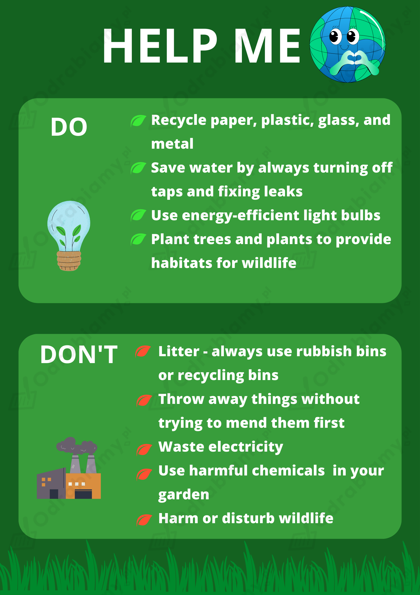

- give up plastic (zrezygnować z plastiku)
- look after the environment (troszczyć się o środowisko)
- plant trees (sadzić drzewa)
- recycle waste (przetwarzać odpady)
- reduce pollution (ograniczyć zanieczyszczenie)
- save water (oszczędzać wodę)
Poniżej przedstawiona jest przykładowa odpowiedź do tego zadania. Każdy uczeń może rozwiązać je w inny sposób. Poniższe rozwiązanie traktuj jako wzór, na podstawie którego stworzysz własną odpowiedź.
Other phrases: (inne wyrażenia)
- give up fast fashion (zrezygnować z mody typu fast fashion)
- look after the planet (troszczyć się o planetę)
- reduce your carbon footprint (ograniczyć swój ślad węglowy)
- reduce your meat consumption (ograniczyć spożywanie mięsa)
- save energy (oszczędzać energię)
Poniżej przedstawiona jest przykładowa odpowiedź do tego zadania. Każdy uczeń może rozwiązać je w inny sposób. Poniższe rozwiązanie traktuj jako wzór, na podstawie którego stworzysz własną odpowiedź.
1. To help the environment, you can give up plastic, plant trees, recycle waste, reduce pollution, and save water.
(Aby pomóc środowisku, można zrezygnować z plastiku, sadzić drzewa, poddawać odpady recyklingowi, zmniejszać zanieczyszczenie i oszczędzać wodę.)
2. People in my school could for example recycle waste. We could get recycling bins and make sure we separate bio waste from plastic.
(Ludzie w mojej szkole mogliby na przykład poddawać odpady recyklingowi. Moglibyśmy kupić pojemniki do recyklingu i upewnić się, że oddzielamy bioodpady od plastiku.)
3. The government should make sure factories don't pollute the environment by dumping waste in the rivers.
(Rząd powinien upewnić się, że fabryki nie zanieczyszczają środowiska poprzez wyrzucanie odpadów do rzek.)
Problems:
- C
- F
- G
- H
Eco-friendly solutions:
- A
- B
- D
- E
Uzasadnienie odpowiedzi:
Problemy związane ze środowiskiem są przedstawione na ilustracjach C (wycinka lasów), F (spryskiwanie upraw środkami owadobójczymi), G (susza), H (śmiecenie).
Rozwiązania przyjazne dla środowiska są przedstawione na ilustracjach A (panele słoneczne), B (energia wiatrowa), D (oddawanie starych ubrań i zabawek), E (sadzenie nowych drzew).
Tłumaczenie wyróżnionych wyrazów:
ban - zakazać
protect endangered species - chronić zagrożone gatunki
renewable energy - energia odnawialna
wind farms - farmy wiatrowe
solar power - energia słoneczna
global warming - globalne ocieplenie
cut down - ścinać
destroy - niszczyć
deforestation - wylesienie
pollute - zanieczyszczać
pesticides - środki owadobójcze
throw away - wyrzucać
mend - naprawiać
landfills - wysypiska śmieci
repurpose - ponownie wykorzystać
Dopasowanie porad do plakatów:
A - use renewable energy/increase the use of solar power (używajcie odnawialnej energii/zwiększcie użycie energii słonecznej)
B - use renewable energy/build wind farms (używajcie odnawialnej energii/budujcie farmy wiatrowe)
C - don't cut down trees (nie ścinajcie drzew)
D - give old clothes to charity/repurpose things (oddawajcie stare ubrania organizacjom charytatywnym/ponownie wykorzystujcie rzeczy)
E - plant trees (sadźcie drzewa)
F - don't use pesticides (nie używajcie środków owadobójczych)
G - find out about global warming (dowiedzcie się więcej o globalnym ociepleniu)
H - don't send rubbish to landfills (nie wysyłajcie śmieci na wysypiska)
Poniżej przedstawiona jest przykładowa odpowiedź do tego zadania. Każdy uczeń może rozwiązać je w inny sposób. Poniższe rozwiązanie traktuj jako wzór, na podstawie którego stworzysz własną odpowiedź.
Advice I'd add to the poster: (porady, które dodał(a)bym do plakatu)
- reduce plastic packaging
(ograniczaj ilość plastikowych opakowań)
- cycle or walk on foot whenever possible
(jedź rowerem lub idź pieszo, gdy tylko jest taka możliwość)
- don't forget to bring your own reusable bag to the shop
(nie zapominaj o własnej torbie na zakupy wielokrotnego użytku)
- don't litter
(nie śmieć)
Uwaga! Wstawione odpowiedzi zostały pogrubione w tłumaczeniu.
1. deforestation
(proces usuwania drzew z obszaru ziemi - wylesienie)
2. global warming
(powolny wzrost temperatury na Ziemi - globalne ocieplenie)
3. endangered species
(rodzaj zwierząt lub roślin, które mogą niedługo wyginąć - zagrożone gatunki)
4. climate change
(zmiany, które uważa się, że wpływają na pogodę na świecie - zmiana klimatu)
5. renewable energy
(formy energii, które wykorzystują naturalne zjawiska, np. wiatr - energia odnawialna)
6. pesticides
(związki chemiczne używane do zabijania owadów - środki owadobójcze)
7. wind farms
(miejsca z turbinami, które produkują energię z wiatru - farmy wiatrowe)
8. solar power
(energia pozyskiwana ze słońca - energia słoneczna)
9. landfill
(wielka dziura w ziemi, gdzie zakopuje się śmieci - wysypisko śmieci)
Poniżej przedstawiona jest przykładowa odpowiedź do tego zadania. Każdy uczeń może rozwiązać je w inny sposób. Poniższe rozwiązanie traktuj jako wzór, na podstawie którego stworzysz własną odpowiedź.
I think all of the above exist or are used in my country. For example, lots of houses and supermarkets have installed solar panels in order to use the energy from sunlight. I've also seen some wind farms in a few places.
(Myślę, że wszystkie z powyższych istnieją lub są wykorzystywane w moim kraju. Na przykład, w wielu domach i supermarketach zainstalowano panele słoneczne w celu wykorzystania energii słonecznej. W kilku miejscach widziałem/am też farmy wiatrowe.)
Uwaga! Wstawione odpowiedzi zostały pogrubione w tłumaczeniu.
1. throw away
(Nie ma nic złego w tym, że wyrzuca się ubrania. Ich naprawa wymaga za dużo trudu.)
2. repurpose
(Dobrze jest ponownie wykorzystywać rzeczy, na przykład przerabiać stare ubrania na torby.)
3. protect
(To nie jest zadanie dla młodych ludzi, by ochraniać zagrożone gatunki.)
4. pollute
(Rząd powinien zadbać o to, żeby firmy nie zatruwały rzek i mórz chemikaliami i innymi odpadami.
5. destroy
(Kiedy ludzie niszczą lasy, może to spowodować poważne problemy.)
6. ban
(To niemożliwe zakazać plastikowych toreb. Ludzie zawsze będą z nich korzystali.)
Kamil's opinions: (opinie Kamila)
Kamil disagrees with statements 1 and 6, but he agrees with statements 2-5.
Poniżej przedstawiona jest przykładowa odpowiedź do tego zadania. Każdy uczeń może rozwiązać je w inny sposób. Poniższe rozwiązanie traktuj jako wzór, na podstawie którego stworzysz własną odpowiedź.
I agree with Kamil. I believe it isn't OK to throw away clothes if it's possible to mend them. I also think there should be a ban on plastic bags. It's not that hard to carry a reusable shopping bag with you.
(Zgadzam się z Kamilem. Uważam, że wyrzucanie ubrań nie jest w porządku, jeśli można je naprawić. Uważam też, że należy zakazać plastikowych toreb. Nie jest tak trudno nosić ze sobą torbę na zakupy wielokrotnego użytku.)
Poniżej przedstawiona jest przykładowa odpowiedź do tego zadania. Każdy uczeń może rozwiązać je w inny sposób. Poniższe rozwiązanie traktuj jako wzór, na podstawie którego stworzysz własną odpowiedź.
In the video still, there is a group of people, both adults and children. They're wearing the same white T-shirts and orange gloves, so I think they're involved in some kind of a project. In the foreground, there's a man in a green hat. He's squatting down and doing something off camera. Next to him, there's a small boy helping him with a tool. I'd say they're picking up rubbish.
Tłumaczenie:
Na zatrzymanym filmiku widać grupę ludzi, zarówno dorosłych, jak i dzieci. Mają na sobie te same białe koszulki i pomarańczowe rękawiczki, więc myślę, że są zaangażowani w jakiś projekt. Na pierwszym planie jest mężczyzna w zielonym kapeluszu. Przykucnął i robi coś poza kamerą. Obok niego jest mały chłopiec, który pomaga mu przy użyciu narzędzia. Powiedział(a)bym, że zbierają śmieci.
1. The child is probably using this tool to pick up rubbish. I think this is an organised clean-up.
(Dziecko prawdopodobnie używa tego narzędzia do zbierania śmieci. Myślę, że jest to zorganizowane sprzątanie.)
2. I think these people are a community who takes care of the environment. Maybe they're from the same neighbourhood and they've decided they want to do something to help the planet.
(Myślę, że ci ludzie to społeczność, która dba o środowisko. Może pochodzą z tej samej okolicy i zdecydowali, że chcą zrobić coś, by pomóc planecie.)
3. In my hometown, we have to recycle our waste. Every household has to segregate their rubbish or else they get a fine. There are lots of other things my local communities could do to look after the environment. For example, I think it would be a good idea to have more rubbish bins. There are too few rubbish bins in my town so some people litter.
(W moim rodzinnym mieście musimy poddawać odpady recyklingowi. Każde gospodarstwo domowe musi segregować śmieci, w przeciwnym razie grozi mu grzywna. Jest wiele innych rzeczy, które moja lokalna społeczność mogłaby zrobić, by dbać o środowisko. Na przykład uważam, że dobrym pomysłem byłoby zwiększenie liczby pojemników na śmieci. W moim mieście jest ich zbyt mało, więc niektórzy ludzie śmiecą.)
Poniżej przedstawiona jest przykładowa odpowiedź do tego zadania. Każdy uczeń może rozwiązać je w inny sposób. Poniższe rozwiązanie traktuj jako wzór, na podstawie którego stworzysz własną odpowiedź.
Rozwiązanie na obrazku:

Tłumaczenie:
Pomóż mi!
Co należy robić:
Czego nie należy robić: